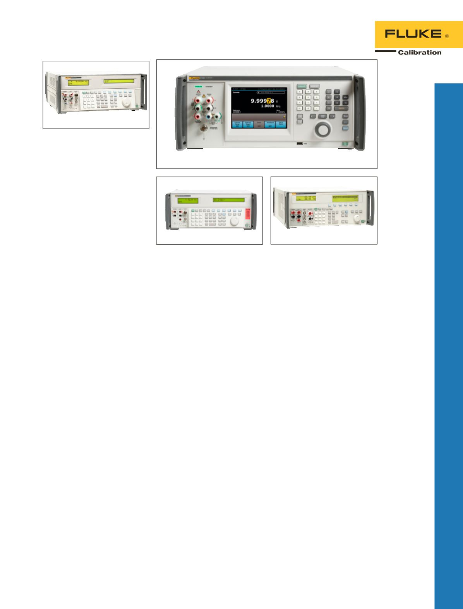

Multiproduktkalibrator 5502A
Robuste, transportable Lösung
für die Anpassung an Ihren
Einsatzbereich und Ihr Budget.
•
Kalibriert zahlreiche
verschiedene elektrische
Testgeräte
•
Robuste Schutzschaltungen
verhindern teure Schäden durch
Bedienerfehler
•
Ergonomische Tragegriffe
•
Robuster optionaler Koffer mit
integrierten Griffen und Rädern
und abnehmbarer Klappe an der
Vorder- und Rückseite
•
Optionale Kalibrierung von
Oszilloskopen bis 600 MHz
Multiprodukt-Kalibrator
5522A
Robust, transportabel, vielseitige
Einsatzbereiche.
•
Kalibriert unterschiedlichste
elektrische Messgeräte mit mehr
als 14 Funktionen
•
Genauigkeiten sollen
Digitalmultimeter bis zu
6,5 Digits unterstützen
•
Unempfindliche
Schutzschaltkreise verhindern
durch Bedienerfehler verursachte
kostspielige Fehler
•
Optionale Kalibrierung von
Oszilloskopen bis 1.100 MHz
•
Problemloser Transport
Elektrische
Kalibratoren
DC/NF
Multifunktionskalibrator
5730A
Der neue Gold-Standard für die
elektrische Kalibrierung.
•
Hochleistungs-
Multifunktionskalibrator der
nächsten Generation
•
Unterstützt Messgeräte mit bis zu
8,5 Stellen Auflösung
•
Artefakt-Kalibrierung sorgt für
die geringsten Support-Kosten
und höchste Zuverlässigkeit bei
der Leistung
•
Neue Leiterplatten mit
überarbeiteter Digitaltechnologie
•
Kapazitiver 6,5"-VGA-
Touchscreen mit grafischer
Vollfarb-Benutzeroberfläche
•
Anzeige der Menüs und
Funktionen in einer von neun
auswählbaren Sprachen
•
Optionaler Breitbandausgang bis
30 MHz
5730A
5502A
5522A
5700A
5080A
Multifunktionskalibratoren
5700A
Bewährter Kalibrator mit höchster
Genauigkeit
•
Unterstützt Messgeräte mit bis zu
7,5 bis 8,5 Stellen Auflösung
•
Artefakt-Kalibrierung sorgt für
die geringsten Support-Kosten
und höchste Zuverlässigkeit bei
der Leistung
•
Optionaler Breitbandausgang bis
30 MHz
Multiprodukt-Kalibrator
5080A mit hoher Compliance
Lösungen für analoge und digitale
Aufgaben.
•
Hohe Compliance für die
Kalibrierung analoger
Instrumente
•
Unempfindliche
Schutzschaltkreise verhindern
durch Bedienerfehler verursachte
kostspielige Fehler
•
Kalibriert eine breite Palette von
Geräten einschließlich analogen
Messgeräten sowie 3,5- und
4,5-stelligen Digitalmultimetern
•
Optionen zum Kalibrieren
von Oszilloskopen und
Megohmmetern
5
Elektrische Kalibrierung